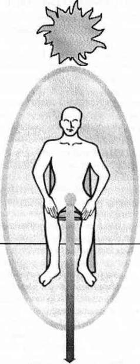
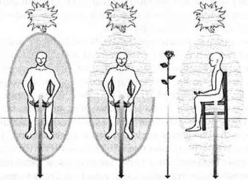

ALTIN GÜNEŞ TEDAVİSİ
Bu noktaya kadar göreviniz, enerjinizi temizleyerek gerçek benliğinizi bulmak ve kendiniz için huzur dolu bir yorumlama ortamı yaratmaktı. Şimdi yapmanız gereken yaptığınız değişiklileri kalıcı kılarak eski beklentilerin ve davranışların sizi eski halinize götürmesini önlemeye yardımcı olmaktır.
Kafanızın içindeki odaya giderek korunmuş auranızın ardına geçmeniz sınırlarınızı belirlemenize yardımcı oldu; topraklanıp imajları yok etmeniz dışardan gelen mesajlardan ve enerjilerden kendinizi korumanızı sağladı. Bundan sonraki adım topraklanmış enerjiyi ve imaj parçalarını toplayarak enerjiyi hayatınıza sizin koşullarınızla geri almaktır.
Altın güneş tedavisi, kendinizi günlük olarak kendi temizlenmiş enerjinizle beslemenin bir yoludur. Bu yöntemin amacı enerjinin iyi ya da kötü, iyileştirici ya da yıkıcı, doğru ya da yanlış değil, sadece enerji olduğunu sürekli hatırlatmaktır. Enerji, karşılığında her şeyi -sevgi, mutluluk, hüzün, nefret, kahkaha, delilik- alabileceğiniz bir değerdir. Enerji yönlendirilebilir, yenilenebilir, yeniden yönlendirilebilir ve yeniden kullanılabilir. Enerji kendi başına yaratılamaz ya da yok edilemez ama enerji, yaratabilir ve yok edebilir.
Enerjiyi yönlendirmeyi ve hediye etmeyi öğrendiniz; toplayıp topraklama kordonuna yolladınız; kafanızın içinde bir oda ve hediyeler yarattınız; auranızın sınırlarını belirlediniz; başka insanlarla ilgili yarattığınız imajlardan kurtuldunuz; eski mesajlardan gelen enerjiyi boşalttınız. Böylece enerjinin nasıl kolayca şekillenebildiğim gördünüz; dolaşmaktan, akmaktan ve değişmekten ne kadar hoşlandığını anladınız.
Enerjinin akışkan yapısı sizin çalışmanızın temelini oluşturdu. Enerjinizin kaynağına her daim bağlı kalabilirseniz o zaman her hareket, her değişim her iyileşme mümkün olacaktır. Şayet kendi enerjinize daima bağlı kalabilirseniz sizi ne hayatta ne bilinç ötesinde hiçbir kuvvet durduramayacaktır.
Altın güneş, sahip olduğunuzun enerjinin bitmez tükenmezliğini temsil eden bir semboldür; bu enerji ile istediğiniz tür bir hayat yaratabilirsiniz. Hayatınızın genellikle akıcı değil, kısıtlanmış olmasının nedeni çoğu kez aile ile toplumun anlaşılabilir ve kontrol edilebilir olmak için size ihtiyaç duymasıdır. Pek çoğumuz bu birbirinin kopyası, toplumun yönlendirdiği, enerji yiyici kısırdöngünün içinde doğumdan itibaren kısılıp kalırız. Cinsiyetiniz neyse bunun getirdiği sorumlulukları üstlenirsiniz; hangi ırktansanız onun getirdiği sorumlulukları yüklenirsiniz. Genellikle iki yaşından itibaren altın güneşinizin büyük bir dilimi topluma uymaya, başkalarını mutlu etmeye ve sorun yaratmamaya ayrılmıştır bile. Kafası karışık, korku dolu ve kontrol tutkunu toplum bizi kontrol etmeye çalışır. Ailelerimizi, çevremizi ve genel olarak da toplumu karıştırmamak için yapar bunu.
Altın güneş tedavisi ve bu kitaptaki diğer bütün çalışmalar içinizdeki maneviyatın iyileşip özgürleşmesini amaçlar. Şifalı altın güneş sizin aracılığınızla toplumu da iyileştirecektir. Yaptığınız her çalışmanın sadece iç dünyanızda değil, iç dünyanızdaki enerji üzerinde de etkisi vardır. Ancak şimdi sadece size ve sizin iç dünyanıza yoğunlaşacağız.
Kişisel enerjiniz sonsuzdur. Altın güneş sembolü enerjinizin canlı, yenilenebilir ve sürekli ulaşılabilir olduğunu gösterir. Ne yaparsanız yapın enerjinizi tüketemezsiniz. Fazla enerji verip kendinizi tekrar enerji ile doldurmayı unutabilirsiniz ama enerjinizin büyük kısmı daima size açıktır. Altın güneş tedavisi size, sizin bilgilerinizi, iyileştirme yeteneğinizi ve kendi cevaplarınızı taşıyan kendi enerjinizi toplama ve kullanma yolunu gösterir.
ALTIN GÜNEŞİ HAYAL ETMEK
Altın güneş tedavisi için rahatça oturun ve kendinizi topraklayın. Temizlenmiş auranızda, kafanızın içindeki odaya girin ve nöbetçinin arkasına geçin. Yok etmeniz gereken birkaç imajı yok edin. Şimdi auranızın üzerinde tam başınızın tepesinde altın bir güneş olduğunu hayal edin (Şekil 6). Hayatınız boyunca elinizin altında olacak; size bahşedilmiş sonsuz enerji kaynağınızı sembolize eden altın güneşinizin sıcaklığını hissedin. Altın güneşiniz sizin bilgilerinizi, iyileştirme yeteneğinizi ve mizah duygunuzu taşır. Aynı zamanda da sizin sekizinci çakranızdır. Ne zaman isterseniz kullanabileceğiniz bir enerji kaynağını sembolize eder.
Enerji sözcüğü kafanızı karıştırıyorsa o zaman bunu “dikkat” kelimesiyle değiştirin. Aynı anlama gelirler. Dikkatinizi bir şeye yoğunlaştırdığınızda enerjinizin bir kısmı da oradadır. Dikkatiniz, zihinsel enerji ve duyarlılık enerjisi gerektirir; altın güneş tedavisinin ilk basamağı bunu size hatırlatmaktır. Bütün dikkatinizi şimdiki zamana, içinde bulunduğunuz ana vermediğinizde en yüksek etkiyi yaratacak enerjiye sahip olamazsınız.
Bu yöntemin ilk basamağında altın güneşiniz hayatınızdaki ilişkiler ya da olaylar dolayısıyla kaybettiğiniz veya birilerine verdiğiniz enerji için size ışık tutma görevi görecektir. Ne zaman isterseniz altın güneşiniz o enerjiyi geri çağıracak, temizleyecek ve yeniden kullanmanıza olanak sağlayacaktır. Güneşinizden enerjiyi geri çağırmasını isteyin ve enerjinin geri gelişini izlerken kafanızın içindeki odada kalın.
Şayet dikkatiniz auranızın içinden başka her yere dağılmış durumdaysa buna şaşırmayın. Topraklanmanızı ve odaklanmanızı sürdürerek enerjinizin güneşinize geri dönmesini izlemelisiniz. Başka insanlarla fikir ayrılıklarının ya da anlaşmazlıkların enerjisini görebilirsiniz; umutsuzca mal mülk sahibi olma isteğinin enerjisini ya da önemli işleri boş verme, erteleme enerjilerini görebilirsiniz Aynı zamanda ilişkilerden, konuşmalardan, duygusal durumlardan arda kalmış bölük pörçük parçalar görebilirsiniz. Odaklanın, açık olun ve sadece kendinizi seyredin.

Şekil 6. Altın Güneşi Hayal Etmek
Enerjileriniz geri geldikçe, yaratmış olduğunuz bağlantı parçalarının güneşinize değer değmez yanıp düşmesine izin verin. Güneşinize giren her yığının temiz enerjiye dönüştüğünü görün. Örneğin, enerjiniz unutamadığınız bir sevgilinizle olan tartışma şeklinde geri gelebilir. Bu enerji güneşinize yaklaştıkça nasıl bir ihtilaf taşıdığını görür ya da hissedersiniz. Ancak enerji güneşinize değdiği anda ihtilaf yanarak düşer ve yok olur. Bundan sonra yenilenmiş ve temizlenmiş enerji güneşinizle bir olur. Artık kullanabileceğiniz bu kadar daha fazla enerjiniz vardır. Sevgilinizle yaşadığınız sorunu istediğiniz zaman tekrar gündeme getirebilir ya da yolunuza devam edersiniz çünkü enerjiniz temizlenmiş ve size geri dönmüştür.
Altın güneş tedavisinin amacı sizi odaklamak ve enerjinizin (ya da dikkatinizin) her nerede saklanıyorsa size geri dönmesini sağlamaktır. Yeni ve temizlenmiş enerjiyle ne yapmak istediğiniz size kalmış bir şeydir.
Eğer bu noktada size geri gelen herhangi bir şey göremiyor ya da hissedemiyorsanız endişelenmeyin. Siz görün ya da görmeyin altın güneşiniz enerjiyi toplar ve temizler. Altın güneş çakrası, size, topraklanmış ve odaklanmış haldeyken eski kalıplardan kurtulup çevrenizdekilerle sağlıklı bir sınır oluşturmanız için yol gösteren güçlü bir ışıktır. Şu anda zaten bedeninizdeki her şey enerjilerinizi geri çağırmaktadır. Altın güneş sadece odaklanmanızı ve enerjileri bilinçli olarak sınıflandırmanızı sağlar. Enerjiniz ve dikkatiniz zaten geri dönmektedir. Altın güneş sadece bu enerjileri toplamak, temizlemek ve yeniden yönlendirebilmek için kullanacağınız bir araçtır.
Altın güneşi ne zaman başınızın üstüne yerleştirseniz değişik enerjiler size geri dönecektir. Böylece dikkatinizin şimdiki zamanda sahip olduğunuz farkındalıktan nasıl saptırıldığını gözlemleyebilir ya da altın güneşinizin toplama ve temizleme işlemini yapmasına güvenerek iyileşmenin tadını çıkarabilirsiniz.
Kararsız, dağılmış ya da anlayamadığınız bir duygusallık içindeyseniz hemen güneşinizi açın ve gelen enerjiyi yakından gözlemleyin. Enerjinizin nerden geldiğini gördüğünüzde sizi kıstıran davranış biçimlerini topraklayabilirsiniz. Enerjinizi tek bir noktada toplamak için imajları yıkabilir ya da nöbetçinizi güçlendirebilirsiniz veya güneşinizin işlemi tek başına yapması bekler ve nerede olursa olsun size dönen enerjinin temizlenip kullanıma hazır hale geldiğini bilirsiniz.
ALTIN GÜNEŞ TEDAVİSİNİ UYGULAMAK
Altın güneş tedavisinin ikinci aşamasına geçmek üzere topraklamanızı ve genel düşünsel durumunuzu kontrol ettikten sonra güneşinizin size getirdiği birkaç imajı yok edin. İhtiyaç duyuyorsanız birkaç davranış biçiminizi topraklama kordonunuzdan aşağıya bırakabilir; auranızın ya da nöbetçinizin rengini değiştirebilir veya kafanızın içindeki odada daha rahat bir noktaya geçebilirsiniz. Bu sürecin ilk bölümünde yaşadığınız tüm değişiklikler yönlendirilmelidir. Size bu rahat ortamı sağladığı için altın güneşinize teşekkür edin. Düşünsel durumunuzda herhangi bir değişiklik hissetmiyor olsanız bile yine de altın güneşinize teşekkür edin. Demek ki görevini sizi rahatsız etmeden ya da sizinle bağlantı kurmasına gerek kalmadan yapmaktadır.
Düşünsel durumunuz istediğiniz gibi olduğunda auranızın tepesinde küçük bir yer açın ve güneşinizin enerjisinin içeri yansımasına izin verin (Şekil 7). Bırakın bu huzur verici enerji auranızın içine dolup derinizi kaplasın. Sıcaklığı yüzünüzde, ellerinizde ayaklarınızda, sırtınızda, bacaklarınızın altında, kollarınızda ve tüm auranızda hissedin. Auranızı ve sınırlarını altından yapın.

Şekil 7. Altın Güneş Tedavisi
Güneşinizin enerjisini soluyun ve sıcaklığının ciğerlerinizi doldurduğunu hissedin. Nefes aldıkça içinize çektiğiniz oksijen ile birlikte enerjinin kan dolaşımınızda dolaştığını hissedin. Temizlenmiş, şimdiki zamana ait iyileştirici enerjinin kan dolaşımınızı, kaslarınızı, organlarınızı ve kemiklerinizi aydınlattığını görün. Altın enerjinizi karnınızda, kalçanızda, bacaklarınızda, göğüs kafesinizde, boynunuzda, yüzünüzde ve kafatasınızda hissedin. Nefes alın.
Şimdi topraklama kordonunuzu da altına dönüştürün ve enerjinin bedeninizin içinde kordonunuzdan aşağı aktığını; kordonu ve bedeninizi temizlediğini; kordonunuzu şimdiki zaman ait iyileştirici enerji ile doldurduğunu hissedin. Kafanızın içindeki odada kalın ve odanın içindeki her şeyi; duvarları, mobilyaları, pencereden görünen manzarayı altın rengine çevirin. Bu yeni altın odada kalın ve altın güneşinizi nöbetçi sembolünüzün üzerine yansıtın. Nöbetçinizi altından yapın ve kordonunuzu onunla uyumlu hale getirin. Bu, nöbetçinize de şimdiki zaman iyileşmesi sağlar.
Birkaç dakika oturun ve enerjinizi hissedin. Bu, sıcak, huzur verici, harikulade enerji size aittir. Her istediğiniz anda hizmetinize hazır, bedelsiz ve tamamen kontrolünüz altındadır. Bedeninizi dolaşırken ve her bir hücrenizi tek tek aydınlatırken onu hissedin. Bu enerjiyi auranız boyunca ve enerji araçlarınızda dolaşırken izleyin ve onları sizin için daha gerçek kılmasını gözlemleyin. Şimdiki anda kendi enerjinizle sarmalanmış bir halde güven içinde olmanın nasıl bir his olduğunun farkına varın.
Toprak hattınızı kontrol edin ve hala altın rengi olduğundan emin olun. Altın güneş enerjinizi bedeninizde dolaştırmak ve topraklama kordonunuzdan topraklamak harika bir iyileşme yöntemidir. Bedeninizin her parçası içinden aydınlandıkça eski mesajlar, acılar ve saklanmış duygular yerlerinden çıkarak düşerler. Topraklama kordonunuzu altın rengi yaptığınızda eski ve tortulaşmış enerjilerden kurtularak bedeninizin şimdiki zamana akışını sağlarsınız. Topraklama kordonunuzu altın güneş enerjisi ile iyileştirmek aynı zamanda topraklama işleminizi de daha etkin kılar.
Hazır olduğunuzda auranızın tepesindeki açıklığı kapatarak altın enerjinin bedeninize ve auranıza yerleşmesine izin verin. Topraklanmış olarak kalın, yere eğilin, ellerinizi yere dayayın ve başınızı aşağıya bırakın. Bedeninizdeki altın enerjinin ellerinizden ve ayaklarınızdan ya da size daha kolay geliyorsa başınızın tepesinden süzülmesini sağlayın. Tamamen temizlendiğinizi hissedene kadar öyle durun, sonra yavaşça doğrulup oturun. Kontrol edin ve kafanızın içindeki odada kaldığınızdan emin olun. Bitirdiniz. Harika bir çalışmaydı!
Bedeninize ne zaman enerji eklerseniz ardından mutlaka enerjiyi süzün. Bedeniniz kendi başına gayet iyi çalışır; siz ona ışıklar, renkler ve enerjiler eklediğinizde ciddi biçimde huzursuz olabilir. Bedeniniz fiziki dünyaya ait olduğu için eterik dünyada yaşayan topraklama kordonunuzdan, auranızdan ve imajlarınızdan farklılık gösterir. Bedeniniz inanılmayacak ölçüde sorumluluk, yaşam bilgisi ve genel bilgi barındırır. Eterik bilginiz tüm bunlarla hemen uyum gösteremez. Buna ek olarak bedeniniz gerçek zamanda varolduğu için çalışmasını kendi temposunda gerçekleştirmektedir; bu da ruhsal çalışma temposundan büyük farklılık gösterir. Her zaman iyi niyetle yapıyor olmanıza karşın iyileştirici enerjiyi bedeninizin temposuna göre yanlış zamanda yanlış bir şekilde ekliyor olabilirsiniz. Bedeninizin kendisine verilenler üzerinde kontrolü olmalıdır.
Altın güneş enerjinizin bedeniniz üzerinde negatif bir etkisi olmamalıdır. Bu enerjinin ne kadarını tutup ne kadarını süzeceğine ve nerede depolayacağına bedeniniz kendisi karar vermelidir. Bedenler ruhlardan çok daha değişik mücadeleler içindedir ancak ne yaptıklarının ve neye ihtiyaçları olduğunun tamamen farkındadırlar. Eğer bedeninizin verdiğiniz ruhsal enerjiye ihtiyacı varsa onu saklayacaktır. İhtiyacı yoksa bundan kurtulması için ona şans vermelisiniz.
Enerjiyi birdenbire bedeninize fırlatmayın; bedeninizi uzun süredir ihmal etmiş olabilirsiniz, sizin dikkatiniz olmaksınız kendi başına yaşıyor olabilir. Durum buysa, bedeniniz kendi yöntemlerini kullanacaktır. İstediğini seçmesi için bedeninize yetki tanıyın. Aksi takdirde bedeniniz size güvenmeyecektir.
Bedeninizle işbirliği yapın; bedeniniz için çalışın ona karşı değil. Bedeniniz ne yaptığını bilir.
Her altın güneş tedavisinden sonra tüm araçlarınızı bilinç farkındalığına getirirsiniz. Bu noktada artık topraklama kordonunuz ve auranız enerjinizi şu kişiden ya da bu olaydan geri çağırdığınızı bilecektir ve bunlara karşı daha güçlü hale gelecektir. Nöbetçiniz de sizin nerede olduğunuzu bilecektir ve bu durumda daha berrak daha güçlü bir enerji yollayabilir. Kafanızın içindeki odada büyük bir bahar temizliği yaptınız. Her yer yepyeni bir farkındalığa ulaştı ve şu andaki ruhsal seviyeniz ile aynı düzeye geldi.
Altın güneş tedavisi ruhsal benliğiniz ile bedeniniz arasında sıcak, güvenli ve gerçek bir iletişim sağlar. Bu bağlantı sağlandıktan sonra çevrenizdeki olaylara daha sağlıklı ve akılcı bakarsınız. Artık aceleci şifaya, duygusal kıvırtmalara, dağılmaya ya da korkup sınırlar arkasına sığınmaya bel bağlamanız gerekmeyecektir. Elinizin altında sadece bu kitapta öğretilen araçlar değil aynı zamanda uçsuz bucaksız ruhunuz olacaktır.
Altın güneş tedavisini günlük kontrollerden sonra ya da ne zaman dengeniz bozulursa uygulayabilirsiniz. Öğrendiğiniz her yöntemle birlikte bu yöntemi de istediğiniz kadar uzun ya da kısa süreli uygulayabilirsiniz. Temelde bu yöntemle iyileşme, altını bedeninizden geçirmeye başladığınız anda tamamlanır. Ama altın güneşinizin sizi istediğiniz kadar aydınlatmasını ve ısıtmasını sağlayabilirsiniz. Tıpkı topraklamanızı açabileceğiniz, auranızı temizleyebileceğiniz ya da imajları yıkabileceğiniz gibi. Süre size kalmıştır.
Artık tüm başlangıç yöntemlerini öğrendiniz ve daha derin çalışma için hazırsınız. Bu noktada günlük meditasyonunuz şöyle olmalıdır: Oturun ve kendinizi topraklayın; kafanızın içindeki odaya girin; auranızı tanımlayın, gerekiyorsa temizleyin; nöbetçinizi kontrol edin, gerekiyorsa yenileyin; ilişki imajlarını yıkın. Bunlar tamamlandığında altın güneşinizi çağırıp kendinizi enerjinizle besleyin. Yere eğilerek ellerinizi zemine dayayın ve gerekiyorsa enerjiyi boşaltarak tamamlayın.
Gün içinde kendinizi yorgun hissederseniz auranızı çabucak altın güneş enerjisi ile doldurabilirsiniz. Bu auranızın sınırlarını tanımlamak için çok hızlı bir yöntemdir. İşte, arabada ya da nerde isterseniz uygulayabilirsiniz. Bu basit aura doldurma işlemi başkalarının yanında da kolaylıkla uygulanabilir; tam süreli altın güneş yönteminden daha kolaydır. Bu kısa iyileşme yöntemi sırasında enerjiyi bedeninize depolamadığınız için eğilmeniz ve enerji fazlasını boşaltmanız gerekmez; bu sayede de okul toplantısında ya da havaalanında kuyrukta beklerken kimseye açıklama yapmak zorunda kalmazsınız. Aslında azıcık gayretle tüm meditasyonunuzu eğer gerekliyse kalabalık içinde de yapabilirsiniz Bu yöntemlerin hiçbiri uygulanmak için özel bir yer, sessizlik ve hatta iç huzuru bile gerektirmez
Kendinizi bu noktaya kadar geldiğiniz için kutlayın. Eğer bu araçlardan bazılarını kullanamadıysanız sakın kendinizi küçümsemeyin. Bazı yöntemler kolay olabilir ama diğerleri enerjinizin nerede takıldığıyla ilgili olarak uzun zaman çalışma gerektirebilir. O zaman Sorun Çözme Kılavuzu’na gidin ve sorunlu bölgeye ya da semptomlara ait bölümü okuyun. Aradığınız cevapları orada bulacaksınız. Tam olarak başaramadığınız yöntemleri tekrar denemek için kendinize şans tanıyın çünkü bundan sonraki bölümde kullanacağınız yöntemler şimdiye kadar öğrendikleriniz üzerine inşa edilmiştir.